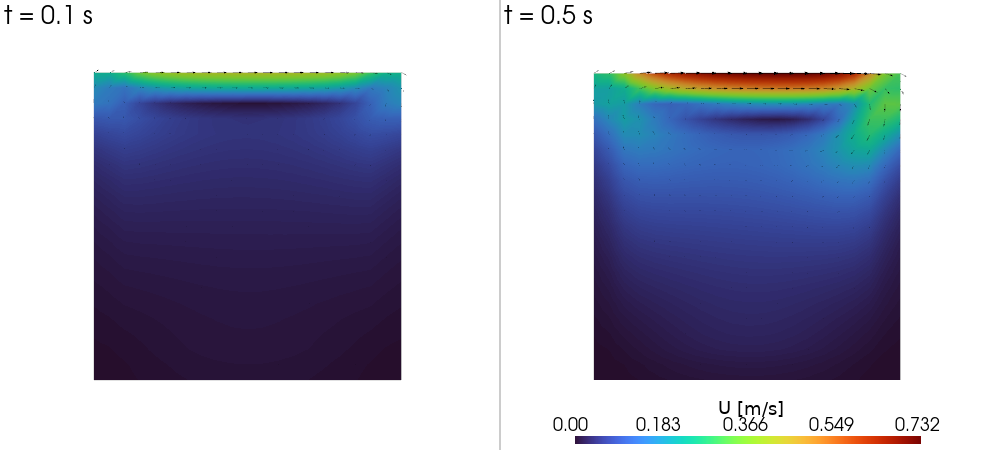
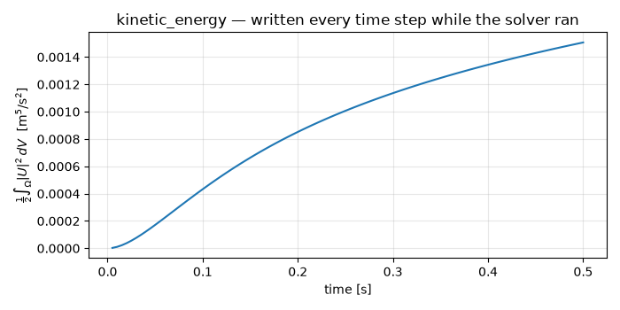

Note
Go to the end to download the full example code.
In-situ post-processing: monitor a run as CSV¶
A case can declare tables — a source, a pipeline of nodes and a write
cadence — and NeoFOAM checks them after every time step, evaluating each on
its own cadence and appending it to postProcessing/<name>.csv in the case
directory. Nothing is written unless the case asks for it, and no post-run
tooling is involved: the numbers land while the solver runs.
There are two front doors, and a case may use both. system/postProcess.yaml
declares tables as data; system/postProcess.py builds them in Python with
| and can register brand-new node types that the YAML then uses by name.
This tutorial runs the bundled postProcessing/cavity case — a laminar
lid-driven cavity — and plots its kinetic energy over time.
If you haven’t run a NeoFOAM case yet, do Run your first NeoFOAM case first.
Imports¶
import contextlib
import subprocess
import matplotlib.pyplot as plt
import numpy as np
import pyvista as pv
from neofoam.solver import incompressibleFluid
from neofoam.tutorial import clone_case
Clone the bundled case¶
postProcessing/cavity is a 20x20 lid-driven cavity that runs in a
couple of seconds. Beside the usual system/ dictionaries it ships the
two post-processing declaration files. The empty .foam marker is what
pyvista’s OpenFOAMReader opens further down.
case = clone_case("postProcessing/cavity")
(case / "cavity.foam").touch()
print(f"working copy: {case}")
working copy: /tmp/neofoam_ho1_v46k/postProcessing/cavity
The declarative front door¶
source, each pipeline entry and write_control are open
mappings resolved by their type against a plugin registry, so a table
needs no code (an unknown key in one of them is rejected, not ignored).
Note the second table: square is not a NeoFOAM node — the script below
registers it. The file lives at
tutorials/postProcessing/cavity/system/postProcess.yaml:
# In-situ post-processing tables — the declarative front door.
#
# Every table becomes one postProcessing/<name>.csv with ``time`` as its first
# column. ``system/postProcess.py`` next to this file declares two more tables
# in Python and registers the ``square`` node the second table below uses.
tables:
# A vector field: three columns (one per component). ``scale`` converts to
# mm/s, ``print`` echoes what flows past it, and the table is evaluated only
# every tenth step.
- name: volume_U_scaled
source: {type: internal, field: U}
pipeline:
- {type: scale, factor: 1000.0}
- {type: print, label: U_in_mm_per_s}
- {type: volIntegrate, name: volume_U_scaled}
write_control: {write_control_type: timeStep, interval: 10}
# The same kinetic energy the script builds with ``|``, declared as data.
# ``square`` is not a NeoFOAM node: system/postProcess.py registers it, and
# the script is executed before this file is resolved.
- name: kinetic_energy_declared
source: {type: internal, field: U}
pipeline:
- {type: mag}
- {type: square}
- {type: scale, factor: 0.5}
- {type: volIntegrate, name: kinetic_energy_declared}
assert (case / "system" / "postProcess.yaml").exists()
The script front door¶
The decorated functions run at load time and return a pipeline, so a
scripted table is the same object a declared one resolves to. The
@Node.register class at the top is what makes type: square valid
in the YAML above — the script is executed first, on purpose.
"""In-situ post-processing tables — the script front door of this case.
The solver executes this file before it resolves ``system/postProcess.yaml``, so
the ``Square`` node registered here is usable from that file as ``type: square``.
Table names must not collide with the declared ones, hence the distinct names.
"""
from typing import Literal
from neofoam.algorithms.field_writer.write_control import IntervalWriteControl
from neofoam.postprocess import InternalDataSet, Mag, Node, Scale, TableSet, VolIntegrate, field
@Node.register
class Square(Node):
"""Square every value."""
type: Literal["square"] = "square"
def compute(self, dataset: InternalDataSet) -> InternalDataSet:
return dataset.with_field(dataset.field**2)
postProcess = TableSet() # the single module-level TableSet the loader picks up
# The decorated function runs here, at load time, so ``Square`` must already
# be defined above it.
@postProcess.table("kinetic_energy.csv")
def kinetic_energy():
"""Half the volume integral of |U|^2 — the cavity spinning up, built with ``|``."""
return field("U") | Mag() | Square() | Scale(factor=0.5) | VolIntegrate(name="kinetic_energy")
@postProcess.table("volume_U_script.csv", write_control=IntervalWriteControl(interval=10))
def volume_U_script():
"""A vector table on its own cadence: every tenth step, in mm/s."""
return field("U") | Scale(factor=1000.0) | VolIntegrate(name="volume_U_script")
assert (case / "system" / "postProcess.py").exists()
Mesh and run¶
Exactly what ./Allrun does. The [U_in_mm_per_s] lines in the log
come from the print node in the declared vector pipeline.
subprocess.run(["blockMesh", "-case", str(case)], check=True)
with contextlib.chdir(case):
incompressibleFluid.run(["."])
[U_in_mm_per_s] U: shape=(400, 3) min=-127.333 max=268.545
[U_in_mm_per_s] U: shape=(400, 3) min=-202.253 max=427.377
[U_in_mm_per_s] U: shape=(400, 3) min=-248.595 max=525.528
[U_in_mm_per_s] U: shape=(400, 3) min=-279.333 max=589.548
[U_in_mm_per_s] U: shape=(400, 3) min=-300.873 max=633.271
[U_in_mm_per_s] U: shape=(400, 3) min=-316.422 max=664.445
[U_in_mm_per_s] U: shape=(400, 3) min=-327.89 max=688.04
[U_in_mm_per_s] U: shape=(400, 3) min=-336.504 max=706.363
[U_in_mm_per_s] U: shape=(400, 3) min=-343.084 max=720.979
[U_in_mm_per_s] U: shape=(400, 3) min=-348.193 max=732.971
The flow, before and after¶
The case is a lid-driven cavity: the top wall slides in +x and drags the
fluid along with it. At the first written time only a thin shear layer under
the lid has picked up any speed. By the last one that sweep has turned down
the right wall and back along the middle — the primary vortex forming —
while the bottom of the box is still close to rest. Both panels share one
colour scale, and the arrows show the direction. The CSV tables below are
the numbers behind this picture.
reader = pv.OpenFOAMReader(str(case / "cavity.foam"))
written_times = [t for t in reader.time_values if t > 0]
first_time, last_time = written_times[0], written_times[-1]
def velocity_mesh(time_value):
reader.set_active_time_value(time_value)
mesh = reader.read()["internalMesh"].cell_data_to_point_data()
mesh["magU"] = np.linalg.norm(mesh["U"], axis=1)
return mesh
panels = [(t, velocity_mesh(t)) for t in (first_time, last_time)]
clim = (0.0, max(float(mesh["magU"].max()) for _, mesh in panels))
pl = pv.Plotter(shape=(1, 2), off_screen=True, window_size=(1000, 450))
for column, (time_value, mesh) in enumerate(panels):
pl.subplot(0, column)
pl.add_mesh(
mesh,
scalars="magU",
cmap="turbo",
clim=clim,
show_scalar_bar=column == 1,
# Under the field rather than across it: the panels are square in a
# wider-than-tall viewport, so the bottom strip is free.
scalar_bar_args={
"title": "|U| [m/s]",
"position_x": 0.15,
"position_y": 0.01,
"width": 0.7,
"height": 0.05,
},
)
# The arrows are decoration; a pyvista build that dislikes the glyph
# filter should still leave the coloured field standing.
with contextlib.suppress(Exception):
arrows = mesh.glyph(orient="U", scale="magU", factor=0.08, tolerance=0.02)
pl.add_mesh(arrows, color="black")
pl.add_text(f"t = {time_value:g} s", font_size=11)
pl.view_xy()
pl.show()

What was written¶
One flat CSV per table, time first column, created on the first write.
The two kinetic-energy tables — one declared, one scripted — hold the same
numbers by two routes. The two volume_U tables carry an interval: 10
cadence, so they have a tenth of the rows; a vector aggregation becomes one
column per component.
tables = sorted((case / "postProcessing").glob("*.csv"))
for path in tables:
head = path.read_text().splitlines()
print(f"{path.name} ({len(head) - 1} rows)")
for line in head[:3]:
print(f" {line}")
kinetic_energy.csv (100 rows)
time,kinetic_energy
0.005,2.8326045317084035e-06
0.01,1.0649835456000253e-05
kinetic_energy_declared.csv (100 rows)
time,kinetic_energy_declared
0.005,2.8326045317084035e-06
0.01,1.0649835456000253e-05
volume_U_scaled.csv (10 rows)
time,volume_U_scaled_0,volume_U_scaled_1,volume_U_scaled_2
0.05,0.03988904821837224,0.0009748817043674814,0.0
0.1,0.04793013809862485,0.0036533031045665014,0.0
volume_U_script.csv (10 rows)
time,volume_U_script_0,volume_U_script_1,volume_U_script_2
0.05,0.03988904821837224,0.0009748817043674814,0.0
0.1,0.04793013809862485,0.0036533031045665014,0.0
Plot the kinetic energy over time¶
kinetic_energy.csv is \(\frac{1}{2} \int_\Omega |U|^2 \, dV\) at every
step — the monitor you would watch to see a transient settle. The lid drags
the fluid into motion, so the curve rises steeply from rest and then flattens
as the primary vortex reaches its steady strength; a flat line from the first
step would mean the solve never advanced.
time, kinetic_energy = np.loadtxt(
case / "postProcessing" / "kinetic_energy.csv",
delimiter=",",
skiprows=1,
unpack=True,
)
fig, ax = plt.subplots(figsize=(7, 3.5))
ax.plot(time, kinetic_energy, color="#1f77b4")
ax.set_xlabel("time [s]")
ax.set_ylabel(r"$\frac{1}{2}\int_\Omega |U|^2 \, dV$ [m$^5$/s$^2$]")
ax.set_title("kinetic_energy — written every time step while the solver ran")
ax.grid(alpha=0.3)
fig.tight_layout()

Where to go from here¶
In-situ post-processing lists the available nodes, the write-cadence options and the recipe for adding your own node.
Decomposed runs work: every rank evaluates its tables, the aggregators reduce over all ranks and the master rank writes one set of CSVs. Only
rowsis serial-only — there is no gather to collect its elements.
Total running time of the script: (0 minutes 1.146 seconds)